Graphic Designer · UI Designer · Front-End Developer
I design emails, social posts and websites that get people to take the next step.
I lead marketing design for a 16-location roofing franchise, co-own the design studio Haute eLeMent, and hold certifications in UI design and front-end development.
- $15K+
- raised in one month by a fundraiser I ran for a cat rescue
- 20
- emails in an automated lead series I rebuilt
- +25%
- open rate in the first week after relaunch
Selected work
- 01Lead nurture email automationEmail · Automation
- 02Cat rescue website redesignWeb design · Showit
- 03“Flock You” fundraiser: $15,000+ in a monthCampaign · Social · Print
- 04Sugar & Sass BakeryBrand identity · Web · Ordering
- 05Haute eLeMent design studioBrand identity · Web · Social
- 06One brand, many marketsBrand system · Print
- 07Seasonal & recruiting campaignsSocial media
- 08Facebook cover redesignConcepts · Process
01 Honest Abe Roofing · Email marketing
Rebuilding a 20-email lead series for 16 locations
The problem
Every new lead received 20 follow-up emails over about 14 months, but the series wasn't moving people toward a roof visit. Most buttons said “Learn more” and led to the blog or the About page. The emails were meant to show each lead's local office and booking link, but a field-name mismatch meant those details never appeared.
What I did
- Rewrote all 20 emails around the homeowner's questions
- Gave every email one clear next step: local booking, local phone, a prep video or financing
- Fixed local personalization so each lead sees their own office
- Added campaign tracking to every link
- Swapped the content in place, so leads already in the series moved to the new emails at their next step
Before and after
| Day | Before | After |
|---|---|---|
| 1 | Why Trust Your Roof to Honest Abe? Learn more → homepage | What a 16-point roof inspection covers Request My No-Obligation Inspection → local booking |
| 6 | Easy Roof Maintenance Tips Every Homeowner Should Know Learn more → blog | A short video: what to expect from a roof visit Watch the Short Video |
| 34 | Our Story: Building Trust One Roof at a Time Learn More → About us | A checklist for comparing roofing quotes Request a Quote → local booking |
Early results
First week on the new emails, compared with the old emails' last full week.
Early numbers from one week. I'll update this page with 30-day results.
02 Ouabache Valley Felines & Friends · Web design
A cat rescue website that gets cats adopted
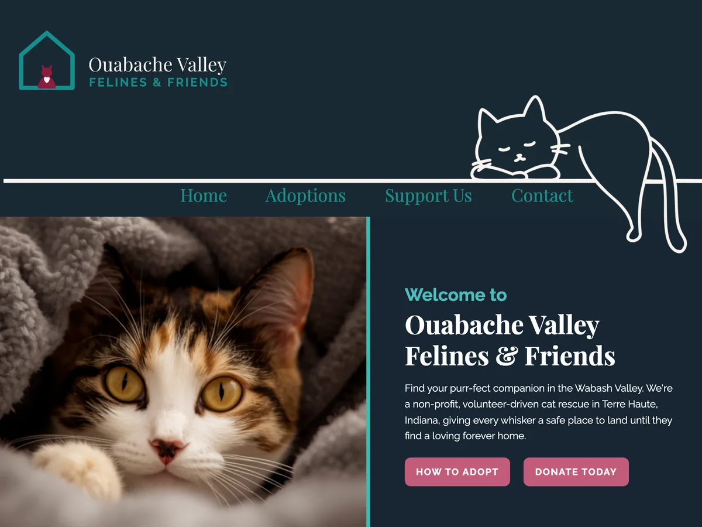
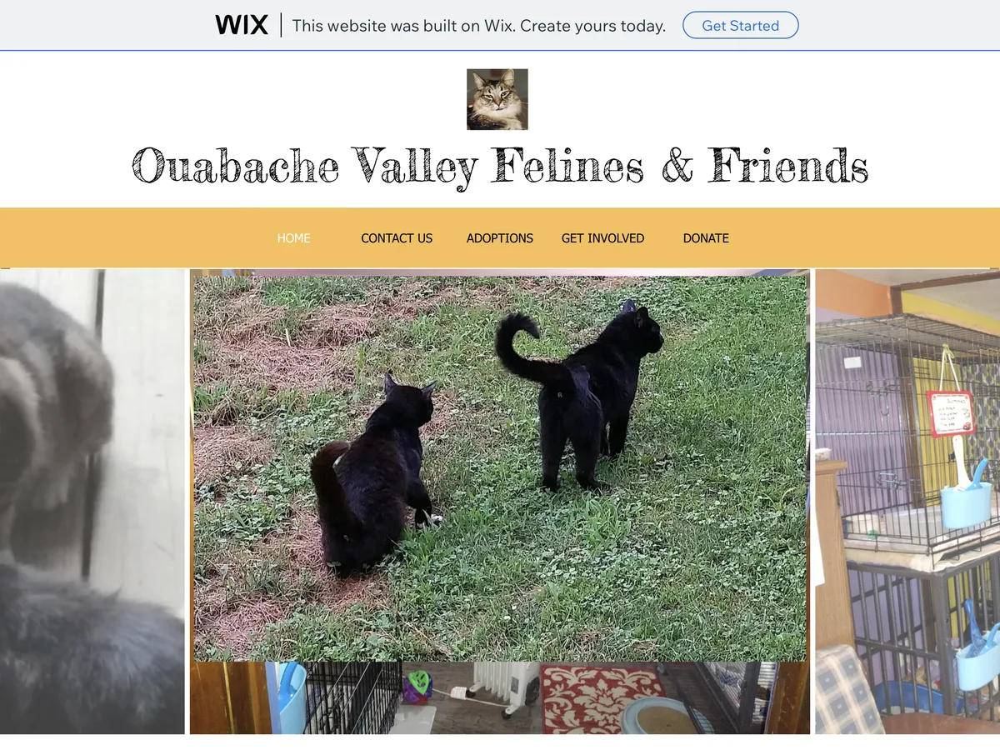
Drag the slider to compare the old homepage with the new one.
What changed
| Problem | Before | After |
|---|---|---|
| Hard to find | Free Wix address with a Wix ad banner | Its own web address, with page titles written for local searches like “Terre Haute cat rescue” |
| Hard to navigate | Photo collage and one long paragraph, with small menu links | A clear welcome message and three paths, Adopt, Volunteer and Donate, each with its own button |
| No applications | Visitors had to call or message | Full online adoption and volunteer applications, including the adoption agreement and volunteer waiver |
| Not built for phones | The desktop layout squeezed onto the screen and cut off, with tiny text | A mobile layout with stacked sections and full-width buttons that are easy to tap |
| No cat information | No way to see who was available | A Meet Our Cats page, grouped into special-needs, senior and working cats, with an Apply to Adopt button |
The full homepage
On a phone
A new brand to match
The old logo was a busy tie-dye graphic with the phone number built in, which didn't work small, on a dark background or on a website. I created a simple cat-in-a-house mark, keeping the rescue's “Follow me to the cat house” idea, and built a full system around it: logo lockups, a roundel icon for social media, a color palette, type and a one-page brand guide.
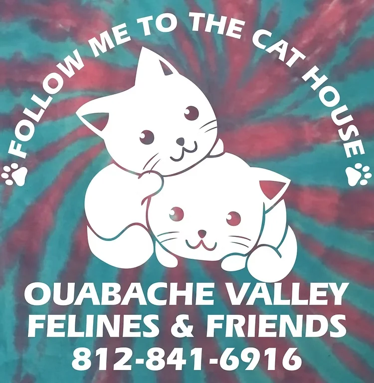
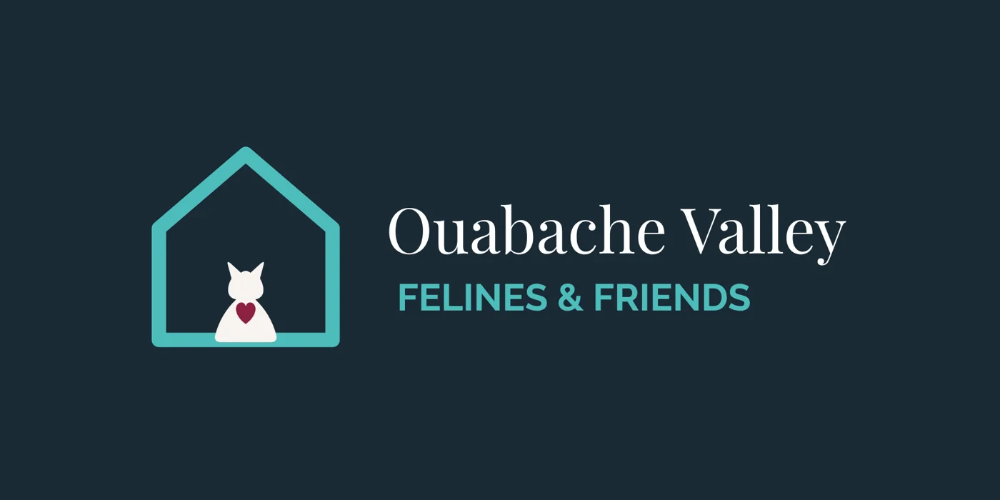
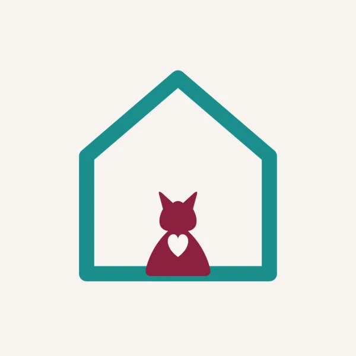
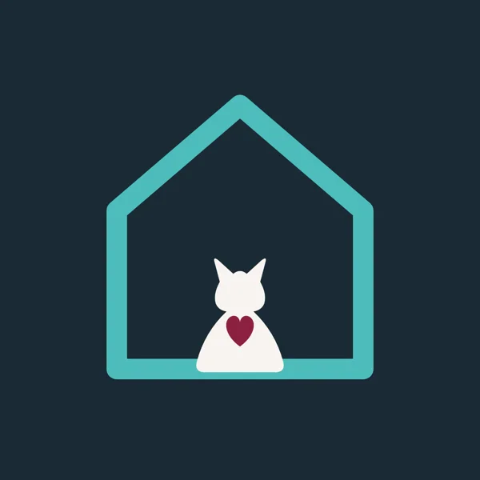
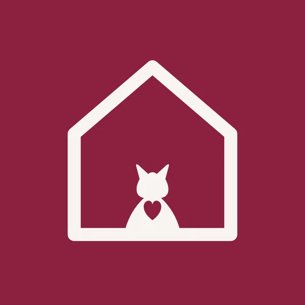
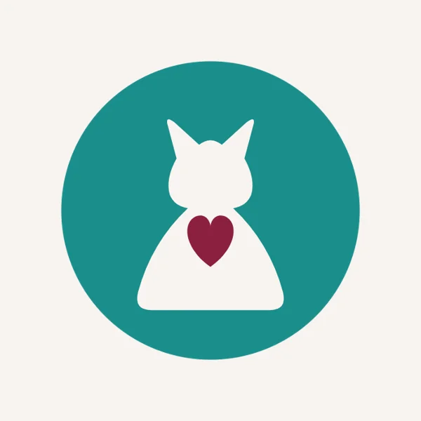
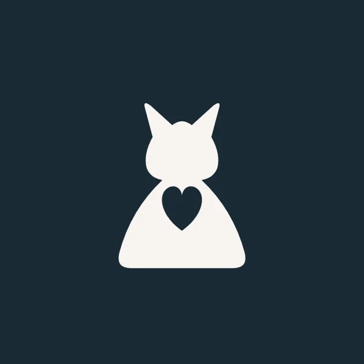
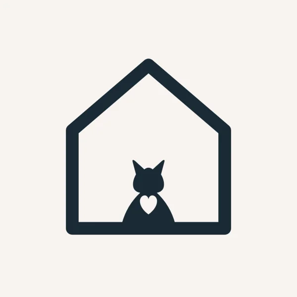
03 Ouabache Valley Felines & Friends · Fundraising campaign
“Flock You”: raising $15,000+ in one month
Neighbors paid to have a flock of pink flamingos planted in a friend's yard, and the “victim” could pay to have them removed or moved on to someone else. I planned and ran the whole fundraiser and created all of its marketing: flyers, yard signs, 93 social posts and the online order form.
Results
Facebook figures from the page's Meta Business Suite reports, July 1–31.
How I ran it
- 1Build suspense
Ten teaser signs went up around town, hinting that a flock was on its way.
- 2Open preorders
Preorders opened on National Pink Flamingo Day in June, and more than 50 orders were waiting before the first flock landed on July 1.
- 3Flock the businesses first
On June 30 we pre-flocked several well-known local businesses to get attention fast and bring them into the fun.
- 4Run the rotation
I sorted orders by area into routes for three volunteer flock teams, keeping 45 flocks in constant rotation for 30 days. Relocated flocks went to the back of the line, so people who ordered first never waited.
- 5Tell the story every day
I posted photos of every flock daily, written as the flamingos' own adventures. Soon local businesses were asking to be flocked so they could join in.
- 6End with the Final Flock
Sponsors covered each flock for a grand finale: all 1,475 flamingos that made it through the month, lined up in front of Indiana State University's football stadium for one last community photo op before they “migrated” for the winter.
Storytelling that kept people sharing
I wrote the campaign as an ongoing story: “breaking news” updates, a “birdnapping investigation,” and the day the Mayor got flocked and we “officially lost control of the flock.” That post reached 51,968 views, and 85% of viewers didn't already follow the rescue.
| Top posts | Views | Reactions, comments & shares |
|---|---|---|
| “UPDATE: We've officially lost control of the flock” | 51,968 | 656 |
| “Breaking Flock News!” | 35,566 | 179 |
| “Breaking News: Birdnapping Investigation Update” | 34,005 | 116 |
| “Flocking Update: Melissa's Statement” | 31,347 | 147 |
The online order form
I designed and built a step-by-step order form, so neighbors could send a flock, pay to remove one, or buy “flock insurance” in a couple of minutes. It handled 83% of all orders, which kept the volunteer team free to deliver flamingos instead of taking orders by phone.
The yard sign
Every flock came with a sign explaining the joke, with a QR code to remove the flamingos or send them on to the next yard. Each flocked yard advertised the fundraiser to its neighbors and brought in the next order.
Flyers
Who got flocked
“Who got flocked” social posts, shared throughout the month to keep orders coming in.
More OVFF fundraisers
04 Sugar & Sass Bakery · My own business
Building a bakery brand from the ground up
Sugar & Sass is my own bakery. I designed everything a customer sees, from the logo and packaging to the website and an online order form that takes card payments.
Logo
A baker character inside a bitten cookie, with pink and chocolate chip versions and one with a QR code for print.
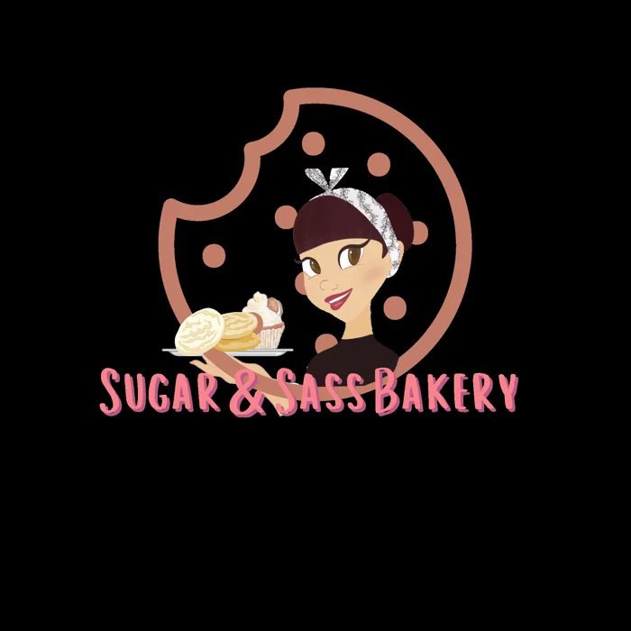
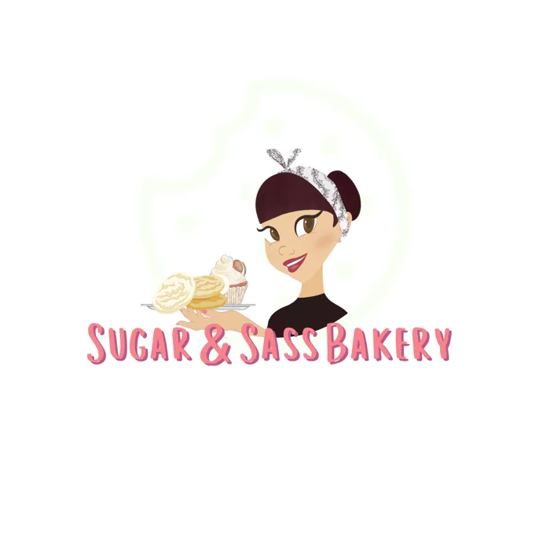
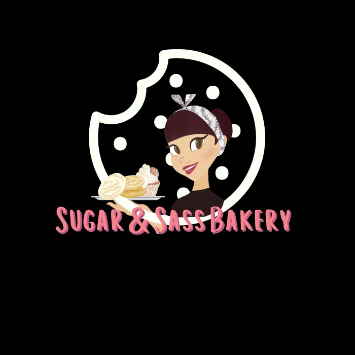
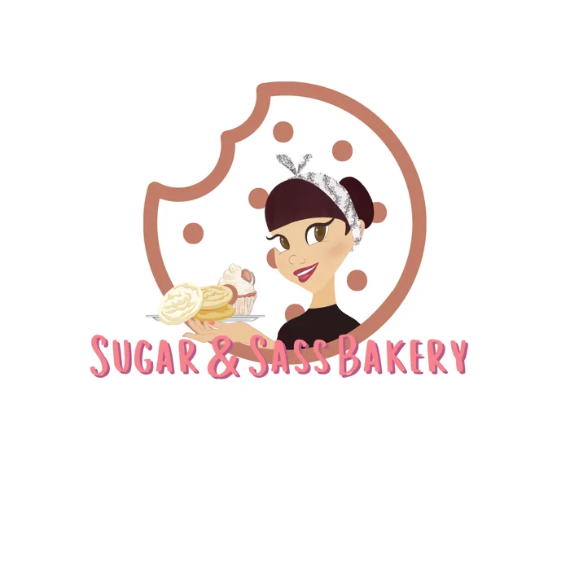
Brand identity
Website In progress
Built in Showit, with an “Order Now” button always in reach and a gallery that sends visitors straight to cookies, cakes or cheesecakes.
“Adopt a Teacher” order form
Adopt a Teacher lets people sponsor a teacher for the school year. Each sponsored teacher gets a treat box four times a year, with a drink from one of two local businesses in the bigger packages. I designed and coded the order form: customers pick a package, choose the teacher's school district and school, add a gift tag, and pay by card through Square in one step. When orders closed, the form switched to a thank-you page.
2026–27 school year
I organize the treat boxes and drinks for every round and deliver them to all 16 schools myself.
05 Haute eLeMent · My design studio
Bold brands, elevated marketing
Haute eLeMent is the female-owned design and marketing studio I co-own in Terre Haute, Indiana. We help small businesses and nonprofits with websites, branding and social media. I lead branding and web design, and I built the studio's own brand, website and marketing.
“We can't thank HAUTE Element and Melissa Schneider enough for all of the work she put in to create our new website! It is incredible and we are so excited about it! Melissa is also the genius behind many of our creative posts and especially our Flamingo fundraiser!”
Brand identity
A plum-and-fuchsia palette, a classic serif paired with a clean sans, and an “eLeMent” wordmark whose mixed capitals spell out the studio's personality. The monogram works as a square logo, a round badge and a social profile picture.
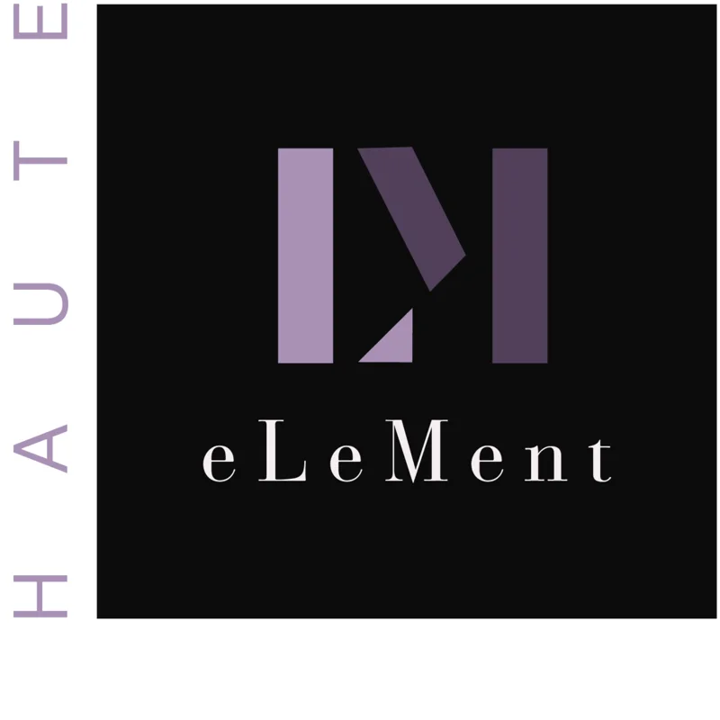
Website Live: haute-element.com
Social media & advertising
Posts that speak to small business owners' real frustrations, each ending with one clear next step: DM us, book a call or claim a build slot.
06 Honest Abe Roofing · Brand system & print
One brand, many markets
Each franchise office needs its own local materials, but they all have to look like Honest Abe. I build templates that keep the brand consistent while letting each city's details, photos and events show through.
“Roof Questions” story series, five markets
Kansas City office launch
Columbia, SC community outreach
08 Honest Abe Roofing · Concepts & process
Facebook cover redesign
I presented three directions, each previewed on desktop and phone with a safe-zone check, so nothing important gets hidden behind the profile photo or cropped on mobile.
Final covers
About me
I spent more than 10 years as a teacher, and I still use what the classroom taught me: explain things clearly, plan for every kind of audience, and keep many projects moving at once.
I moved into design through certifications in UI design and front-end development, and I now lead marketing design for Honest Abe Roofing: emails, automation, social media and print for offices across the country. I also co-own Haute eLeMent, where I design logos, brands and websites for small businesses.
Tools
- Figma
- Adobe Illustrator
- Adobe Photoshop
- Canva
- SendGrid
- Showit
- HTML
- CSS
- JavaScript
Let's work together.
I'm looking for a full-time role in marketing design, email design or instructional design.
melissaschneider011475@gmail.com
07 Honest Abe Roofing · Social media
Seasonal & recruiting campaigns
Short, punchy headlines and one clear button. The fall gutter campaign turns a chore into a joke homeowners recognize. The recruiting ad speaks straight to the people the company wants to hire.